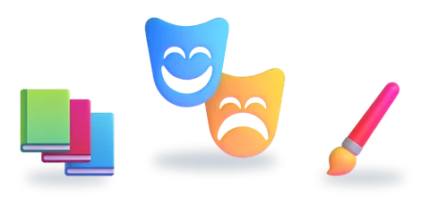

الفنون والأدب

المستوى السادس — الوحدة السادسة
خمسة أسابيع: أربعة لإرساء التعلّمات، والخامس للتقويم والدعم. اختر القسم، ثمّ الدرس. بطاقات «مراجعة» دروسٌ من مستوى أو وحدة أخرى.
الصرف والتحويل

التراكيب
الإملاء
التقويم والدعم
الأسبوع الخامس: تقويم حصيلة الوحدة، ثمّ دعم ما لم يُتقَن.

الرسوم: Twemoji (CC-BY 4.0) وFluent Emoji من Microsoft (MIT). الأصوات: صوت عربي اصطناعي.